什么是百度地图API：
百度地图API是为开发者免费提供的一套基于百度地图服务的应用接口，包括JavaScript API，web服务API，Android等多种开发工具服务。提供基本地图展现，搜索，定义，逆地理编码，路线规划适用于PC端，移动端，服务器多种设备，多种操作系统下的地图应用开发。百度地图 JavaScript API 是一套由JavaScript 语言编写的应用程序接口，它能够帮助您在网站中构建功能丰富，交互性强的地图应用程序。适用于PC或移动端基于浏览器开发，JS版本还为用户开了开源库，简化开发。
1.如果我们想使用地图功能，那么百度地图无非是很好的选择
百度地图API的网址：http://lbsyun.baidu.com/
2. 想要使用百度地图里面的功能就必须先获得密钥
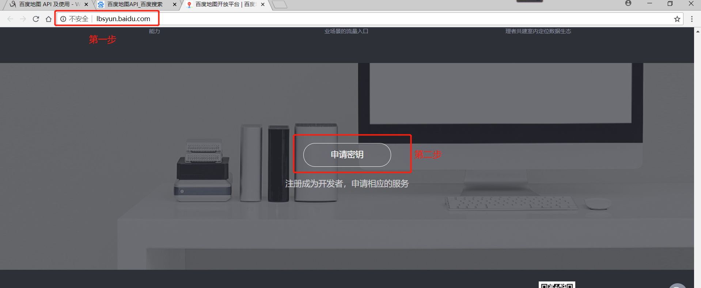
3. 想要获取密钥首先要登陆百度账号或注册看个人情况
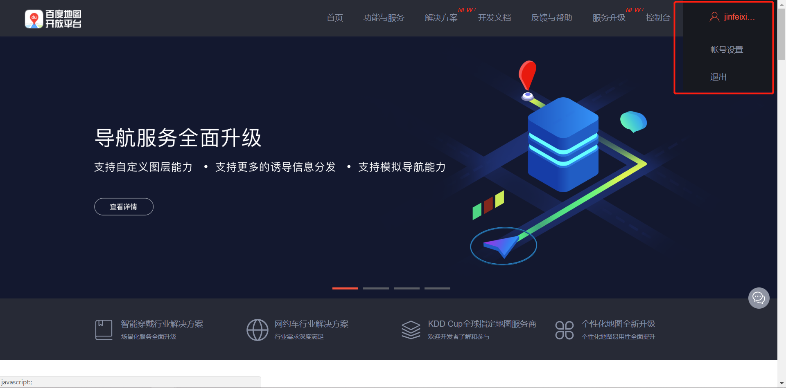
4.登陆后我们开始申请密钥，便可以访问应用AK
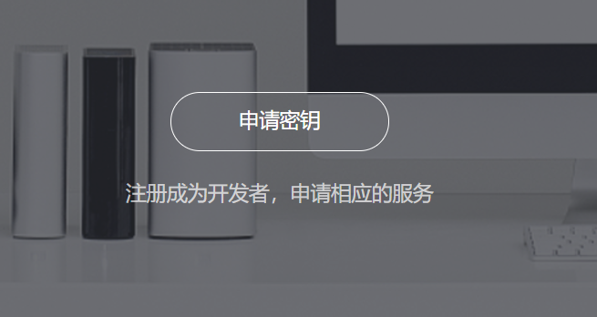
5.点击申请密钥，开始申请
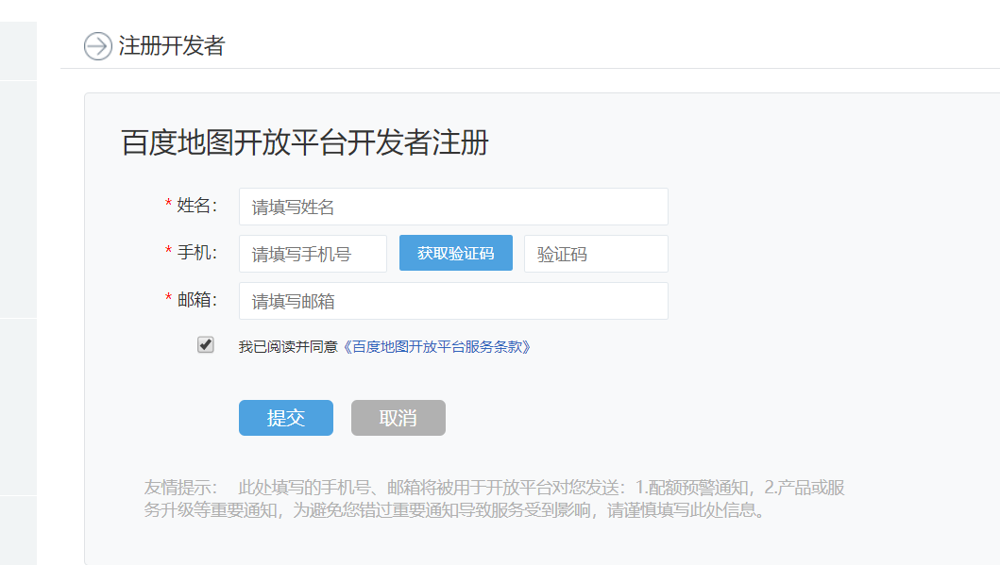
6.信息填写完毕提交，你的邮箱会收到一封由百度地图发来的激活链接点击操作就可以完成获取密钥了。
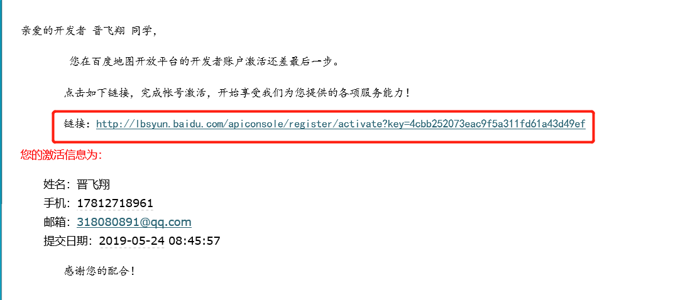
7.查看自己密钥
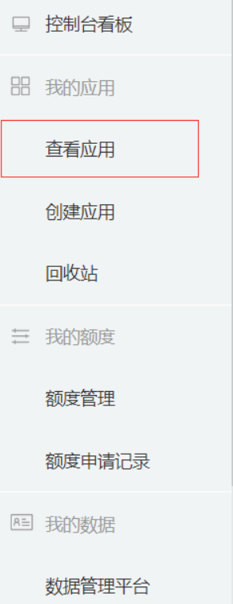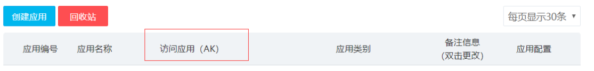
8. 前端我们可以参考文档
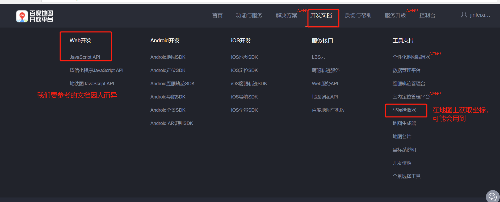
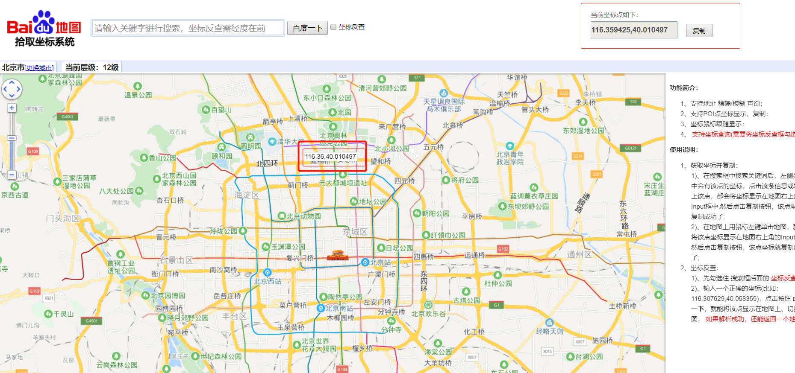
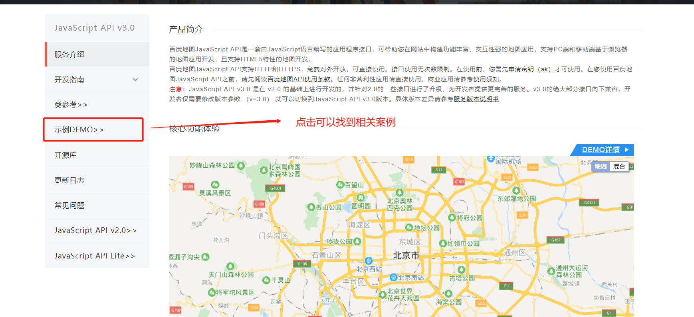
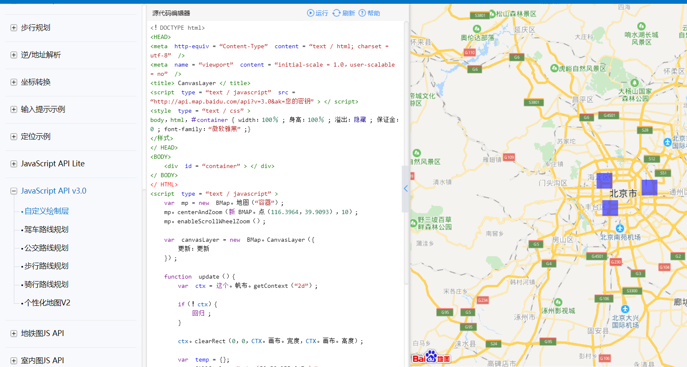
<!DOCTYPE html>
<html>
<head>
<meta http-equiv="Content-Type" content="text/html; charset=utf-8" />
<meta name="viewport" content="initial-scale=1.0, user-scalable=no" />
<style type="text/css">
body, html,#allmap {width: 100%;height: 100%;overflow: hidden;margin:0;font-family:"微软雅黑";}
</style>
<script type="text/javascript" src="http://api.map.baidu.com/api?v=2.0&ak="></script>
<title>地图展示</title>
</head>
<body>
<div id="allmap"></div>
</body>
</html>
<script type="text/javascript">
// 百度地图API功能
var map = new BMap.Map("allmap"); // 创建Map实例
map.centerAndZoom(new BMap.Point(91.123976,29.661369), 11); // 初始化地图,设置中心点坐标和地图级别
//添加地图类型控件
map.addControl(new BMap.MapTypeControl({
mapTypes:[
BMAP_NORMAL_MAP,
BMAP_HYBRID_MAP
]}));
map.setCurrentCity(""); // 设置地图显示的城市 此项是必须设置的
map.enableScrollWheelZoom(true); //开启鼠标滚轮缩放
</script>然后运行浏览器就可以查看了
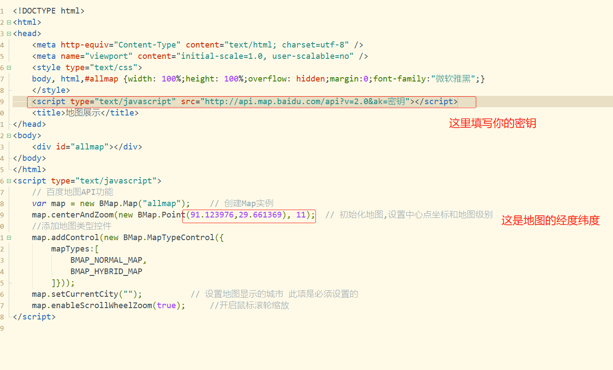